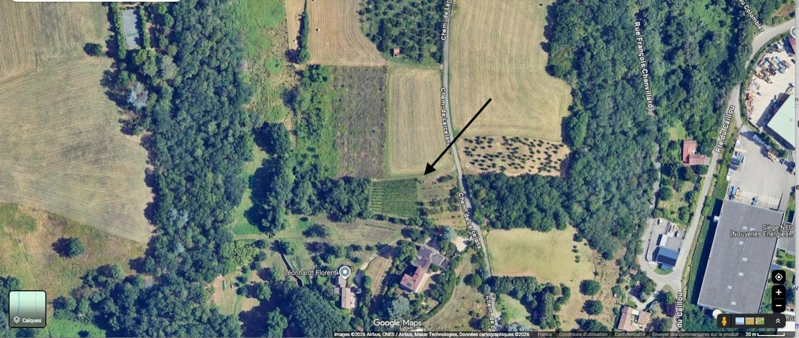
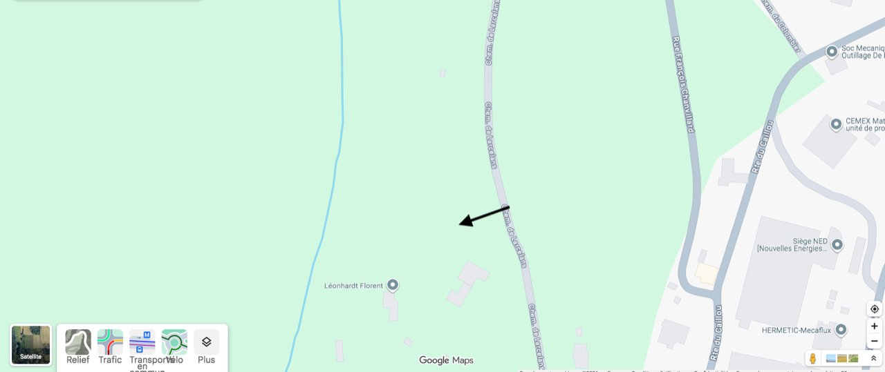

Blanc des Coteaux
Notre vin blanc, issu de la dernière vigne du village.
- Millésime
- à compléter
- Cépage
- Chardonnay
- Volume
- à compléter
- Notes de dégustation
- à compléter
Notre parcelle
Un coteau, des rangs de ceps, et des mains qui savent.
Le terroir
Au pied des Monts du Lyonnais, l'AOC Coteaux du Lyonnais s'étend sur les collines à l'ouest de Lyon. Sols de coteaux, expositions variées : un terroir connu pour ses rouges de gamay et ses blancs frais.
La parcelle de Chaponost en est l'un des derniers témoins sur la commune.

Notre parcelle
Les éléments ci-dessous sont modulables : l'association peut les compléter.
Où se trouve la vigne


Les cépages
Le vin blanc des Coteaux de Chaponost est issu du chardonnay, cépage emblématique des blancs en Coteaux du Lyonnais.
Le vin rouge est issu du gamay, cépage roi de l'appellation pour les rouges.
Une vigne se cultive toute l'année. Le raisin n'est que la dernière étape.
Travaux de la vigne
Dates et saisonnalité données à titre indicatif ; à ajuster avec l'association.


Notre vigneron partenaire
L'association est accompagnée par un vigneron partenaire pour le conseil technique et la vinification. Présentation à fournir par l'association.
Nom du vigneron / domaine : à compléter
Rôle auprès de l'association : à compléter
Présentation : à compléter (quelques lignes sur le partenariat, depuis quand, ce qu'il apporte à la vigne de Chaponost).
Production confidentielle
Notre production est limitée et réservée en priorité aux adhérents. Chaque millésime a son histoire, racontée ci-dessous.
Notre vin blanc, issu de la dernière vigne du village.
Notre vin rouge, élevé et mis en bouteille par les bénévoles.
| Millésime | Blanc | Rouge | Remarques |
|---|---|---|---|
| 2025 | — | — | à compléter |
| 2024 | — | — | à compléter |
| 2023 | — | — | à compléter |
Pour réserver des bouteilles, contactez l'association.